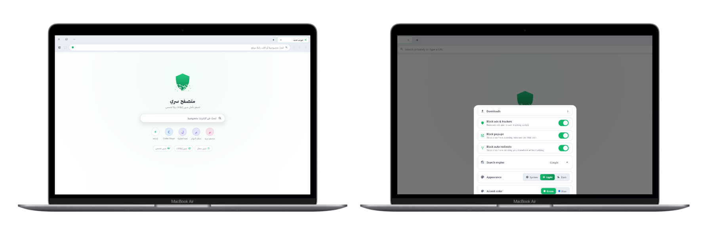
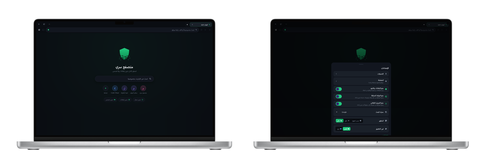
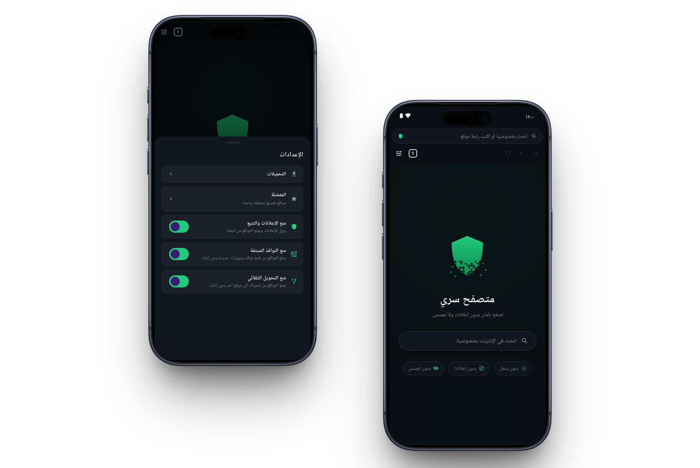

التصفح الخفي يعمل دائما.
في المتصفحات الأخرى عليك أن تفتح وضع التصفح الخفي بنفسك كل مرة. هنا المتصفح كله خفي، وكل تبويب تفتحه سري تلقائيا.
لا سجل يمكن لأحد أن يجده
الكوكيز والملفات المؤقتة وبيانات المواقع تُحذف نهائيا، ولا تُخفى فقط. ولا تحتاج إلى مسح السجل، لأن المتصفح لا يسجّل المواقع التي تزورها أصلا.
لا أحد يرى صفحتك في التطبيقات الأخيرة
عند فتح قائمة التطبيقات الأخيرة، تُظهر المتصفحات الأخرى صورة للصفحة التي كنت تقرأها، فيراها أي شخص ينظر إلى هاتفك. هنا تظهر بطاقة فارغة. ويمكنك التقاط لقطة شاشة بنفسك كالمعتاد.
حاجب إعلانات وأدوات تتبع مدمج
يحجب نحو تسعين ألف موقع معروف للإعلانات والتتبع، فلا يتصل بها جهازك أبدا. لذلك تفتح الصفحات أسرع وتستهلك إنترنت أقل.
النوافذ المنبثقة تنتظر موافقتك
إذا حاول موقع أن يفتح نافذة جديدة أو ينقلك إلى صفحة أخرى دون طلبك، يوقفه المتصفح ويسألك أولا. والقرار لك.
البث إلى التلفاز
أرسل الفيديو والصوت من أي صفحة إلى Chromecast، أو إلى تلفاز سامسونج أو LG عبر DLNA. وإذا كانت الصفحة فيها أكثر من فيديو، تختار أنت الفيديو الذي تريده.
نفس المتصفح على الكمبيوتر
نسخة حقيقية لويندوز، وليست تطبيق هاتف داخل نافذة. في كل مرة تفتحه يبدأ فارغا، وعند إغلاقه تُحذف كل بيانات التصفح.
بسيط وهادئ، بدون أي إزعاج.
لا إعدادات تحتاج إلى ضبطها، ولا شاشات ترحيب، ولا حساب. يفتح على صفحة بداية نظيفة وتبدأ التصفح مباشرة.
يبدأ نظيفا في كل مرة


لا تظهر المواقع التي زرتها ولا اقتراحات مما تصفحته من قبل، لأن المتصفح لا يحفظ شيئا منها. الاختصارات الوحيدة هي المفضلة التي تضيفها بنفسك، ويمكنك إخفاؤها. والحماية تعمل من أول لحظة دون أن تشغّل شيئا.
كل ما تحتاجه في تطبيق صغير

التبويبات والتنزيلات والبث ومانع الإعلانات، في تطبيق حجم تنزيله نحو عشرة ميغابايت. يتبع الوضع الفاتح أو الداكن في هاتفك، أو تختار أنت أحدهما.
معظم المتصفحات السرية للهاتف فقط. هذا يعمل على الكمبيوتر أيضا.
على ويندوز يعمل كمتصفح كامل: يمكنك جعله المتصفح الافتراضي، ويفتح الملفات من جهازك، ويبث إلى التلفاز، ويحذف كل بيانات التصفح عند إغلاق النافذة. نفس حماية الهاتف، على شاشة كبيرة.
حمّله الآن.
مجاني، بدون حساب وبدون تسجيل. بياناتك تبقى آمنة على جهازك ولا تُرسل إلينا أبدا، فليس لدينا خادم يستقبلها أصلا.
ويندوز
يُثبَّت على حساب المستخدم الخاص بك فقط، لذلك لا يطلب صلاحيات المسؤول. ويمكنك جعله المتصفح الافتراضي في ويندوز. من متجر مايكروسوفت يحدّث نفسه تلقائيا، ومن ملف التثبيت لا تحتاج إلى حساب مايكروسوفت.
أندرويد
للهواتف والأجهزة اللوحية بنظام أندرويد 8 وما بعده. من Google Play يحدّث نفسه تلقائيا، ومن ملف APK لا تحتاج إلى حساب Google أصلا.
ما لا يفعله هذا المتصفح. كل ما سبق يحدث على جهازك فقط. ما زالت المواقع ترى عنوان IP الخاص بك وما تفعله عليها، وما زال مزوّد الإنترنت يرى المواقع التي تزورها. هذا ليس VPN وليس Tor: لا يخفيك عن الشبكة، بل يمنع جهازك من الاحتفاظ بأي أثر. سياسة الخصوصية (بالإنجليزية) توضح بالتفصيل ما الذي يمكن أن يراه الآخرون.
أندرويد يسألك قبل تثبيت ملف. في المرة الأولى سيخبرك أن هذا المصدر غير مسموح به، ويعرض عليك شاشة الإعدادات. فعّل «السماح من هذا المصدر» للتطبيق الذي نزّلت منه الملف (مثل Chrome)، ثم ارجع وسيكتمل التثبيت. أندرويد يطلب ذلك لكل تطبيق لا يأتي من متجر.
ملف التثبيت يعرض تحذيرا في المرة الأولى.
يقول ويندوز إن الناشر غير معروف، لأن التطبيق لا يملك بعد شهادة توقيع
مدفوعة. اضغط على مزيد من المعلومات (More info)، ثم
تشغيل على أي حال (Run anyway). أما من متجر مايكروسوفت فلا
يظهر أي تحذير، لأن مايكروسوفت توقّع التطبيق بنفسها. يظهر هذا التحذير
لكل برنامج جديد بدون شهادة، ويختفي كلما زاد عدد من يثبّتونه. وإذا
أردت التأكد أن الملف هو نفسه المنشور هنا، قارن بصمة SHA-256 الخاصة به
بالقيمة أعلاه باستخدام Get-FileHash.